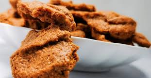

Homepage
KULI KULI

Ingredients
4 cups roasted, unsalted peanuts
1–2 tbsp ginger powder or grated fresh ginger
1–2 tbsp cayenne pepper or dried chili pepper
½ tsp salt (or to taste)
¼ cup water
Vegetable oil, for frying
Instructions
Step 1: Roast and peel the peanuts
Roast the peanuts in a dry pan over medium heat or in an oven at 350°F (180°C) until they are lightly browned and fragrant.
Allow the roasted peanuts to cool completely.
Remove the skins by rubbing the peanuts together with your hands or in a clean kitchen towel.
Step 2: Grind the peanuts
Place the peeled peanuts and ginger into a food processor or a strong blender.
Pulse the mixture until it forms a smooth, oily paste. Be careful not to over-blend, as it could become peanut butter.
Step 3: Extract the oil
Scoop the peanut paste into a clean muslin or cheesecloth.
Squeeze the cloth firmly to extract as much oil as possible from the paste. The more oil you extract, the crunchier the final snack will be. Reserve this oil for frying.
Step 4: Season and shape the dough
Transfer the drier peanut paste into a bowl.
Mix in the cayenne pepper and salt.
Add a tablespoon of water at a time and knead the mixture until it forms a firm, workable dough. Stop adding water as soon as the dough holds together.
Pinch off small pieces of the dough and shape them into small balls or cylindrical sticks.
Step 5: Fry the kuli kuli
Heat the oil you extracted from the peanuts in a deep pan over medium heat. You may need to add some extra vegetable oil if you don't have enough.
Add the shaped kuli kuli to the hot oil, being careful not to overcrowd the pan.
Fry until the kuli kuli turns golden brown and feels hard and crunchy.
Remove the fried kuli kuli with a slotted spoon and place them on paper towels to drain any excess oil.
Step 6: Cool and serve
Allow the kuli kuli to cool completely before serving. They will continue to harden as they cool.
Store any leftovers in an airtight container.